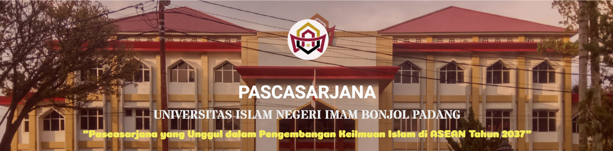

Pascasarjana UIN IB Padang

Pascasarjana merupakan fakultas yang baru berada di kampus II UIN Imam Bonjol Padang pada tahun 2023, yang sebelumnya berada di kampus I UIN Imam Bonjol Padang. Fakultas pascasarjana terdiri dari program magister dan program doktor dengan beberapa jurusan di dalamnya.
Pascasarjana UIN Imam Bonjol Padang menyelenggarakan Program Doktor (S3) dan Program Magister (S2)
VISI :
Pascasarjana yang unggul dalam pengembangan keilmuan Islam di ASEAN tahun 2037.
MISI :
- Menghasilkan magister dan doktor yang beriman, berilmu, berakhlak, dan berbudaya;
- Menghasilkan karya penelitian dan publikasi ilmiah di bidang keilmuan Islam yang bermutu;
- Menghasilkan karya pengabdian kepada masyarakat di bidang keilmuan Islam berbasis riset;
- Mewujudkan pengelolaan pascasarjana yang professional, berintegritas dan akuntabel.
TUJUAN :
- Terwujudnya sarjana S.2 dan S.3 yang berkarakter, kreatif, mandiri, dan bertanggung jawab;
- Diseminasi hasil riset dan pengabdian kepada masyarakat yang bermutu; dan
- Terwujudnya tata kelola Pascasarjana yang sehat.
Daftar Program Studi
VISI:
Menjadi Program Magister yang unggul dalam pengembangan Bidang Pendidikan Agama Islam di ASEAN Tahun 2037
MISI:
MISI:
- Menyelenggarakan pendidikan dan pengajaran yang berkualitas untuk mewujudkan insan akademis yang beriman, berilmu, berakhlak, dan berbudaya;
- Mengembangkan karya penelitian dan publikasi ilmiah yang bermutu di bidang Pendidikan Agama Islam;
- Melaksanakan pengabdian kepada masyarakat di bidang Pendidikan Agama Islam berbasis riset;
- Mewujudkan pengelolaan Program Studi Pendidikan Agama Islam yang profesional, berintegritas, dan akuntabel.
VISI:
Menjadi Program Studi Magister Bahasa Arab yang unggul dalam pengembangan Bahasa Arab di ASEAN Tahun 2037
MISI:
MISI:
- Menghasilkan magister pendidikan bahasa Arab yang beriman, berilmu, berakhlak, dan berbudaya;
- Menghasilkan karya penelitian dan publikasi ilmiah bidang bahasa Arab yang bermutu;
- Menghasilkan karya pengabdian kepada masyarakat bidang Bahasa Arab berbasis riset;
- Mewujudkan pengelolaan Program Studi Pendidikan Bahasa Arab yang profesional, berintegritas, dan akuntabel.
VISI:
Program Magister yang unggul dalam pengembangan Ekonomi Syari’ah di ASEAN Tahun 2037
MISI:
MISI:
- Mengembangkan ilmu-ilmu ekonomi Syari’ah yang inovatif dan teruji;
- Mengembangkan penelitian dan publikasi ilmiah bidang ekonomi syari’ah yang berdaya saing;
- Mengembangkan karya pengabdian kepada masyarakat bidang ekonomi syari’ah berbasis riset;
- Menyelenggarakan pengelolaan Program Studi Magister Ekonomi Syari’ah yang profesional, berintegritas, dan akuntabel.
VISI:
Program Magister yang unggul dalam pengembangan Hukum Keluarga Islam/Ahwal Syakhshiyah di ASEAN Tahun 2037
MISI:
MISI:
- Menghasilkan Magister Hukum Keluarga Islam/Ahwal Syakhshiyah yang beriman, berilmu, berakhlak, dan berbudaya;
- Menghasilkan karya penelitian dan publikasi ilmiah di bidang Hukum Keluarga Islam/Ahwal Syakhsiyah yang bermutu;
- Menghasilkan karya pengabdian kepada masyarakat di bidang Hukum Keluarga Islam/Ahwal Syakhshiyah berbasis riset;
- Mewujudkan pengelolaan Program Studi Magister Hukum Keluarga Islam/Ahwal Syakhshiyah yang profesional, berintegritas, dan akuntabel.
S2-Pengembangan Masyarakat Islam
VISI:
Prodi Magister Sejarah Peradaban Islam yang unggul dan terpercaya dalam pengembangan ilmu sejarah dan peradaban islam yang integratif dan dialogis di ASEAN Tahun 2037
MISI:
MISI:
- Menyelenggarakan kegiatan pendidikan yang komprehensif, integratif dan dialogis pada bidang sejarah dan peradaban islam;
- Mengupayakan terwujudnya penelitian dan publikasi ilmiah bidang sejarah dan peradaban islam yang bermutu;
- Menyelenggarakan kegiatan pengabdian kepada masyarakat bidang sejarah dan peradaban islam berbasis riset;
- Mewujudkan pengelolaan program studi sejarah dan peradaban islam yang profesional, berintegritas dan akuntabel.
VISI:
Menjadi Program Magister yang unggul dalam pengembangan kajian ilmu hadis di ASEAN Tahun 2037
MISI:
MISI:
- Menghasilkan magister ilmu hadis yang beriman, berilmu, berakhlak, dan berbudaya;
- Menghasilkan karya penelitian dan publikasi ilmiah yang bermutu dalam kajian ilmu hadis;/li>
- Menghasilkan karya pengabdian kepada masyarakat islam berbasis riset dalam kajian ilmu hadis;
- Mewujudkan pengelolaan magister ilmu hadis yang profesional, berintegritas, dan akuntabel.
VISI:
Menjadi Program Magister yang unggul dalam pengembangan ilmu Al Qur’an dan tafsir di ASEAN Tahun 2037
MISI:
MISI:
- Menghasilkan magister ilmu Al Qur’an dan tafsir yang beriman, berilmu, berakhlak, dan berbudaya;
- Menghasilkan karya penelitian dan publikasi ilmiah di bidang ilmu Al Qur’an dan tafsir yang bermutu;
- Melakukan karya pengabdian kepada masyarakat bidang ilmu Al Qur’an dan tafsir berbasis riset;
- Mewujudkan pengelolaan program studi magister ilmu A Qur’an dan tafsir yang profesional, berintegritas, dan akuntabel.
VISI:
Menjadi Program Studi Doktor Pendidikan Islam yang unggul dalam pengembangan keilmuan islam di ASEAN Tahun 2037
MISI:
MISI:
- Menghasilkan Doktor Pendidikan Islam yang beriman, berilmu, berakhlak, dan berbudaya;
- Menghasilkan karya penelitian dan publikasi ilmiah di bidang Pendidikan Islam yang bermutu;
- Menghasilkan karya pengabdian kepada masyarakat bidang Pendidikan islam berbasis riset;
- Mewujudkan pengelolaan Program Studi Doktor Pendidikan Islam yang profesional, berintegritas, dan akuntabel.
VISI:
Program Doktor yang unggul dalam pengembangan hukum islam di ASEAN Tahun 2037
MISI:
MISI:
- Menghasilkan Doktor hukum islam yang beriman, berilmu, berakhlak, dan berbudaya;
- Menghasilkan karya penelitian dan publikasi ilmiah bidang Hukum Islam yang bermutu;
- Menghasilkan karya pengabdian kepada masyarakat bidang Hukum islam berbasis riset;
- Mewujudkan pengelolaan Program Studi Doktor Hukum Islam yang profesional, berintegritas, dan akuntabel.
VISI:
Menjadi Pelopor kajian keislaman yang moderatif, imajinatif, inspiratif dan berdaya guna untuk pembangunan peradaban di ASEAN 2040
MISI:
MISI:
- Menyelenggarakan pendidikan kajian keislaman dengan pendekatan interaktif dan pasrtisipatif untuk mengembangkan potensi peserta didik sebagai khalifah fi al-Ardh
- Mengembangkan riset keagamaan yang bersifat transformatif dan parsipatoris dengan pendekatan kolaboratif, multi dan lintas disipliner yang memiliki kemanfaatan bagi kemajuan kehidupan bangsa dan peradaban manusia
- Melakukakn pengabdian masyarakat melalui penguatan peran sosial profetik keislaman dengan semangat edukatif, parsipatoris dan profetik untuk mendorong transformasi sosial yang berkeadilan , berkemanusiaan dan berketuhanan.